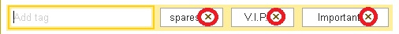
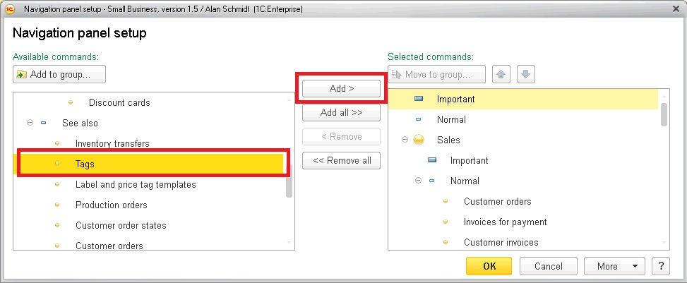
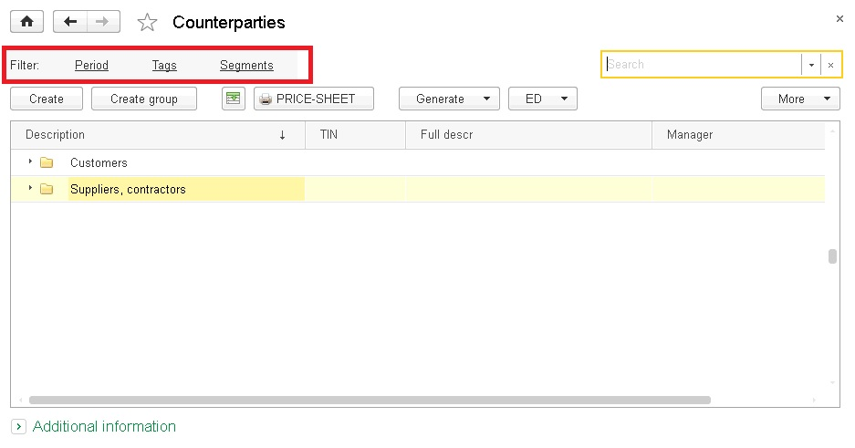
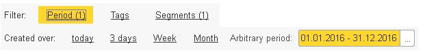

.png) :
:Counterparties classification: tags
All counterparties can now be classified by various criteria to facilitate work with them. For this purpose we introduced two new notions: tags and segments. What do they stand for?
A tag is a brief additional information used for quick classification of counterparties.
Tags are specified in free formats and are "linked" to counterparties. To assign a tag, it is necessary to enter it into the special field on top of the counterparty's card:
If such tag is not present in the database yet, the application will inform you of that. IN this case you may quickly create a new tag by clicking the "+" icon and then Save and close. Tags that has been added already for that counterparty are displayed nearby. To remove a tag, click the :

You may assign any tags as convenient, but it is not recommended to make too long tags – if the length exceeds 15 characters, the application will display only first 15 characters of the tag with "…". IN this case the complete name of the tag can be seen in a pop-up tip when the mouse pointer is on it.
If a tag is no longer used and it is required to remove it from the shortcut bar, you just need to mark it for removing in the tag list. The complete list of all tags in the base can be viewed in the Sales – See also – Tags menu. By default, the corresponding command in the section is hidden, to display it, press Navigation settings – and move the Tags from Available commands to Selected:

When tags are assigned, they may be used for quick selections in the counterparties list and address book.

On top there appears a new shortcut bar with several selection options as follows:

When filtering is set on several tabs, they all will be summed up so that the resulting list will include the counterparties satisfying all the specified conditions. IN addition, to remind you of the filterings made, next to the option names in brackets there will be numbers of the specified values: